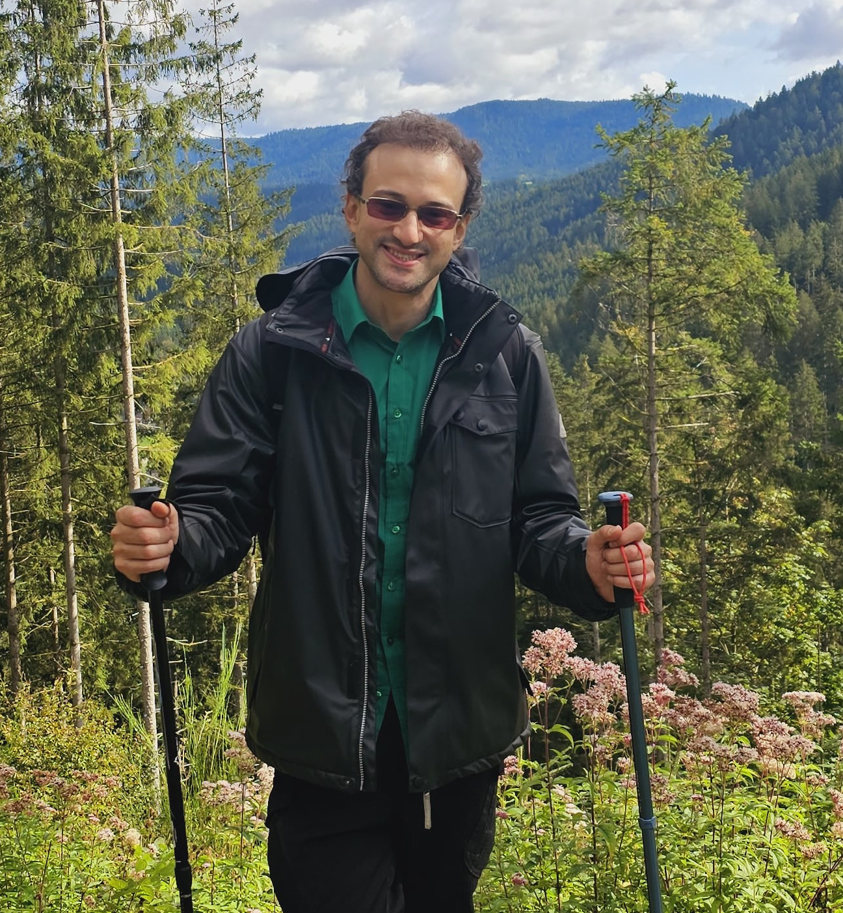

Ph.D. in Mathematics Ph.D. in Computer Science

My mathematical work focuses on the theory and applications of low- and higher-dimensional (generalized) categorical structures, often approached through the lens of two- and three-dimensional universal algebra.In Computer Science, I specialize in programming language semantics and formal methods, guided by the understanding that mathematical structure can underpin the design of practical and reliable tools for real-world problems.
I have held research and academic positions across Europe, the Americas, and Africa, including doctoral and postdoctoral fellowships at the University of Coimbra, York University (Canada), the MFO – Oberwolfach (Germany), Utrecht University (The Netherlands), and the Fields Institute (Canada). I have also undertaken visiting research stays at institutions such as UCLouvain (Belgium), Stellenbosch University and the University of Cape Town (South Africa), and IMPA (Brazil).
📄 For a comprehensive overview of my academic experience, please refer to my full Curriculum Vitae.